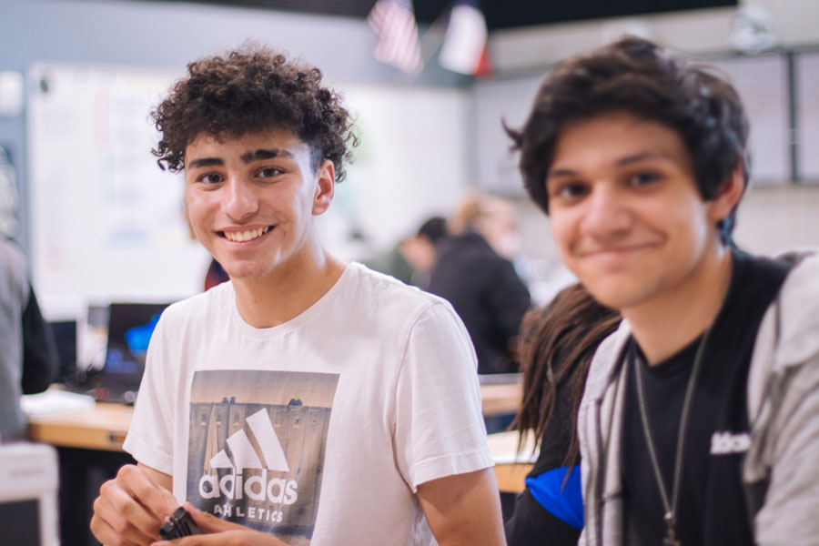

VolunTeen Enrichment program
Teens (age 14–18) are encouraged to participate in the VolunTeen program, to experience the satisfaction and personal sense of accomplishment that can be gained from giving back to the community. All volunteer opportunities are supervised by qualified adults
VolunTeen opportunities are currently available working with younger children at the Club; at the local Veterans’ Home; in the local public hospital; at the City Library; and at the County Animal Shelter. Any training required to perform tasks associated with volunteer positions will be provided.
VolunTeens may also qualify for high-school credits if the home school participates in the program.
